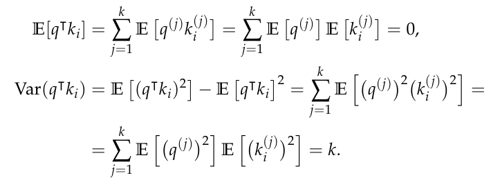

Transformer
A set , where , , and if
for is called vector dictionary
- vector dictionary with values and unique keys
A lookup operation return the value vector for which , if the key is not in the database a special character is returned
- we could relax this very expensive operation (every time scan the whole and compare numbers) with the nearest-neighbur or a weighted combination of them:
Define a function that is a mapping → . The numbers are called attention scores for
- If they form a convex combination they are called attention weights for , denoted
- means that they are bigger than zero and sums to one
The soft lookup (attention pooling) of over is defined as:
- When if and otherwise, the soft lookup operation coincides with the lookup operation
- When all queries return the same value, obtained by averaging all values in D. In this case, the soft lookup operation is called average pooling
A comon way to obtain a convex combination is by using a softmax:
- I can compute the dot product attention scores with
- assuming unit variance and zero mean for both query and key elements:
{kind=link}

- We want to stabilize the variance → scaled attention scores
- No exploding or vanishing due to extreme softmax outputs
- Model does not unintentionally collapse to selecting only one key via softmax→ improves training

- I compute the attention weights via softmax and then perform the convex combination of values ():
We can compute it for queries


All math done to compute attention doesn’t have any parameters to be learned
- The computational complexity to compute the attention of queries over key-value pairs, assuming is
- We have dot products over dimensions
Self Attention: suppose represents a list of vectors. The self attention is defined as:
The self-attention can be seen in two parts:
- Computes a measure of the correlation between an input vector and each vector in the given input
- Computes a new representation of taking into account the previous correlations, as a weighted combination of the input vectors

The cost complexity is → that is quadratic on the number of input vectors
- This is the main challenge of this architecture
When processing a sequence one word at a time, attention should be computed considering only the words before the current one
- If the entire sequence is available, and we would like to compute the attention for multiple words in a single computation, we need a way to disable attention to keys and values in the subsequent words
- We need to force the attention score to be to have the attention weight of zero
Causal Attention
Where is a lower triangular matrix with all non-zero entries equal to

Attention Heads
We apply learned linear projections (matrices ) to map learned from the NN in vectors that the attention can compare
- These projections align and scale features so similarities become meaningful and the model can learn which dimensions matter, otherwise they could be meaningless
- , ,
An attention head is a parametrised function whose output for the
input over is computed as:
Instead of computing a single attention head, transformers use multiple attention heads to learn different ways of performing similarity computations across sequences
- we use h attention heads, each one with its weight matrices
- We end up with h attention heads:
After that, stack horizontally the heads:
- Using a matrix we convert it to more suitable dimension
-
Summarize as:
- I can define the MHSA where
- or also the MHCA

Training Optimisations
When a neural network is being trained, the outputs in the internal layers may take values with widely varying magnitudes
There is a problem if some activations are extremely large and others extremely small:
- The large ones dominate the gradients → those neurons learn too much
- The small ones barely change → those neurons learn almost nothing
Normalization fixes this by keeping all activations in a stable, comparable range
The Layer Normalization is a layer with two learned params with output and input
- To prevent division by zero: ,
- In some implementation I can have but this slow the convergence
- It works for each vector, not depending by the batch
Skip Connections: input is added to the output
- helps preventing vanishing gradient effect → the gradient doesn’t shrink
- If we stack layers, all with skip connections, the computation becomes:
- thus a direct path between and exists and allows direct gradient flowing


Encoder
- params of LN
-
- , with
-
- ,
- is the Gaussian Error Linear Unit (GELU) function
-

Decoder
- , with
- ,
-
- → keys and values from the encoder
- , with and
- ,
-

Input and Output Embeddings
For output typically choose the last embedding from →
An output vector is converted into a probability distribution using softmax and a matrix:
-
- This is also called Language Model Head: from word embedding to a probability distribution:
- A language model head is trasforming the output embeddings into probability distribution over the language’s vocabulary
For the input we compute the embedding as
- with
Position embeddings are use to make sense of token ordering in sentences, otherwise tokens would be treated as bag-of-words. Infact, the attention mechanisms we discussed up so far are permutation equivariant
I can:
- Add to position a number in , where 0 is the first word and 1 the last
- Problem: time-step with sentences of different lenghts doesn’t have consistent meaning across them
- Add something periodic
For smalli, the exponent is small → low denominator → high frequency sinusoids (better distinctions between words). prevents the exponential to explode

- Let the network learn when we know the number of tokens

Transformer-Based Language Models

The pretrained model is useless → it is generic and allows only to predict next words in a probabilistic way
- It is trained in self-supervised way from very large datases
- During pre-training, the transformer-based language model learns to predict the one or more words in a sentence by analyzing the context of surrounding words.
- This helps the model in learning the syntax of the input language, the facts contained in the input sources, some level of semantics on the facts, and how to build syntactically correct sentences
To specialise a pre-trained language model on specific data or context, we can continue its training on a domain-specific, smaller training dataset
- Typically there are different losses between the two phases
- We specialize the language model with a downstream task
- e.g. given an amazon review classify it, given a document generate a summary, …
There are two main approaches to fine-tune a pre-trained language model:
- Use the pre-trained transformer as a feature extractor by removing its final language model head and freezing it → thus training only the classification head
- Use the pre-trained model as a starting point for further training → use the model as a generator
Typically pretraining losses are different:
- Masked language model (MLM) → remove words and use the surrounding to predict them
- BERT
- Causal language model (CLM) → predict the next word in an output sequence given the preceding words
- GPT/Llama/…
There are 3 different structures:
- encoder-only, MLM → BERT
- autoregressive model based on decoder-only transformers, CLM → GPT
- sequence-to-sequence models based on encoder-decoder structure → T5
Masked Language Models (MLM)
- Text sequences in input are first transformed into word embeddings and summed up with positional embeddings, and then passed through a stack of L encoder blocks
- The output of each encoder block except the last one is provided as input to the next encoder block
- The output of the last encoder block corresponds to the contextual embeddings of the input sequences
- What we do with those embeddings may vary based on the downstream task, typically a classification task into classes

Language head if the classes are , otherwise a general classification head
- , with ,
Typically (for BERT) the model dimension (size of a token) is 768, 12 encoders, 12 heads, → this has 110 mln parameters
We train it on two different tasks in pretraining:
- Next Sentence Prediction (NSP): two sentences are concatenated with a separator token and the model must say if they are consequent
[CLS] - s1 - [SEP] - s2 - [SEP]- The
[CLS]token is at the start since at the end I would not know the position since it could vary. This token is the input of the classification
To distinguish between the words in the two sentences, BERT adds up, to each input embedding, the sentence embedding
- The sentence embedding is learned ( )
- where if is in the first sentence, and if is in the second sentence
-
- Both the [CLS] token and the first [SEP] token are part of the first sentence, while the second [SEP] token is part of the second sentence
→ we have two classes (CE loss)

50% of the time, pick actual consecutive sentences from text, otherwise random in the corpus - The
- Mask Language Model (MLM): a stochastic masking algorithm will corrupt the sentence (e.g. 15% of words)
- from → to

- from → to
- → learn to recover each masked word with cross-entropy loss
- uses the output embeddings of the masked positions only
I could use as down-stream task the relevance classification given a query and a document
- it works a lot better than BM25 but the problem is the inference time, hundreds ms vs. just few per each query
Causal Language Models (CLM)
Since no encoders are used, the decoder blocks do not include the cross multi-headed attention and the subsequent add & normalisation block.
- this is autoregressive language model since next word is appended to the prompt
The loss function used to train GPT is the cross entropy of the language model head output:

- I could use key-value caching for attention since it is autoregressive
- GPT3, with h = 12, L = 96, d = 12,288, and n = 2,048 for a model with a total of 175B parameters, trained on a 570 GB text corpus.